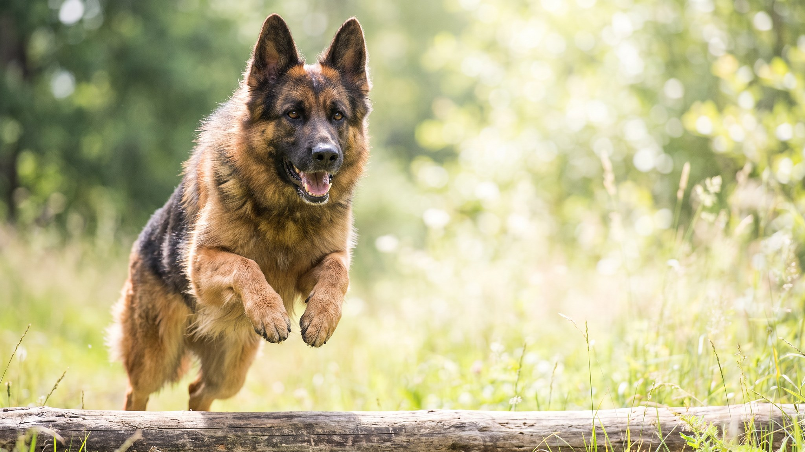

Мини-аусси весит 9-14 кг и помещается в городскую квартиру. Но пастушья программа у неё та же, что у полноразмерного аусси: работать, контролировать, думать. Миниатюрная американская овчарка даёт хозяину максимум отдачи, если хозяин готов вкладывать. Ниже: что именно и в каком объёме.
🐾 Ваш питомец — миниатюрная американская овчарка?
Заведите профиль в AnimaLife: приложение запомнит породу, возраст и вес и будет подсказывать по уходу именно для неё. Вопросы AI-ветеринару — круглосуточно и бесплатно.
Завести профиль → Завести в MAX →
У вас iPhone? AnimaLife есть в App Store
Миниатюрная американская овчарка: активная, преданная, очень умная собака. Она привязывается к семье крепко и плохо переносит долгое одиночество: более 5-6 часов в одиночестве без задачи или компании дают тревогу и деструктивное поведение. Порода не агрессивна, но и не безразлична: посторонние вызывают настороженность, дети из своей семьи принимаются полностью.
С незнакомыми людьми мини-аусси держится сдержанно. Это не застенчивость, а пастушья осторожность: оценить, понять, принять. На социализацию с 8 до 16 недель стоит потратить время осознанно.
Два часа физической активности в день для мини-аусси это минимум, а не норма. Бег, фрисби, agility, хайкинг. Но физическая усталость без умственной не даёт покоя: порода входит в топ-5 по обучаемости среди пастушьих собак, и мозг требует такой же работы, как лапы.
Мини-аусси может «пасти» детей, кошку, гостей, собирать их в угол комнаты. Это не доминирование, а инстинкт. Без управления он мешает: собака нервничает, когда «стадо» расходится. С управлением становится игрой: порода охотно переключает пастуший порыв на апортировку или трекинг.
Если дома маленькие дети, важно научить собаку команде «место» и «отпусти» с щенячьего возраста: пастушьи покусывания за пятки у детей встречаются именно у неуправляемых особей.
Шерсть у миниатюрной американской овчарки средняя, двухслойная, с подшёрстком. Линяет дважды в год интенсивно, между линьками умеренно. Расчёсывание 2-3 раза в неделю обычным расчёсом плюс пуходёрка в сезон линьки. Мыть по мере загрязнения, примерно раз в 1,5-2 месяца.
Миниатюрная американская овчарка хорошо уживается с другими собаками при правильной социализации. С кошками возможно, если выросли вместе или кошка не убегает (триггер пастушьего гона). С детьми старше 6-7 лет складывается отлично: порода выносливая и игривая.
Порода подходит активным людям, которые готовы заниматься ежедневно. Подходит для спорта с собакой: agility, flyball, обидиенс. Не подходит тем, кто работает 10 часов и хочет собаку для дивана: мини-аусси без задачи разносит квартиру или приобретает навязчивые привычки.
Материал носит информационный характер и не заменяет очную консультацию ветеринара.
🐾 У вас миниатюрная американская овчарка?
AnimaLife соберёт уход под породу: к каким болезням есть склонность, что проверять по возрасту, чем кормить и когда пора к врачу. Бесплатно, прямо в мессенджере.
Собрать план ухода → Собрать в MAX →
У вас iPhone? AnimaLife есть в App Store
🐾 Понравился разбор?
Подпишитесь на канал — каждый день разбираем по одному тревожному симптому у кошек и собак: что в пределах нормы, а когда пора к врачу. Подпишитесь, чтобы не пропустить разбор, который может спасти здоровье вашего питомца.